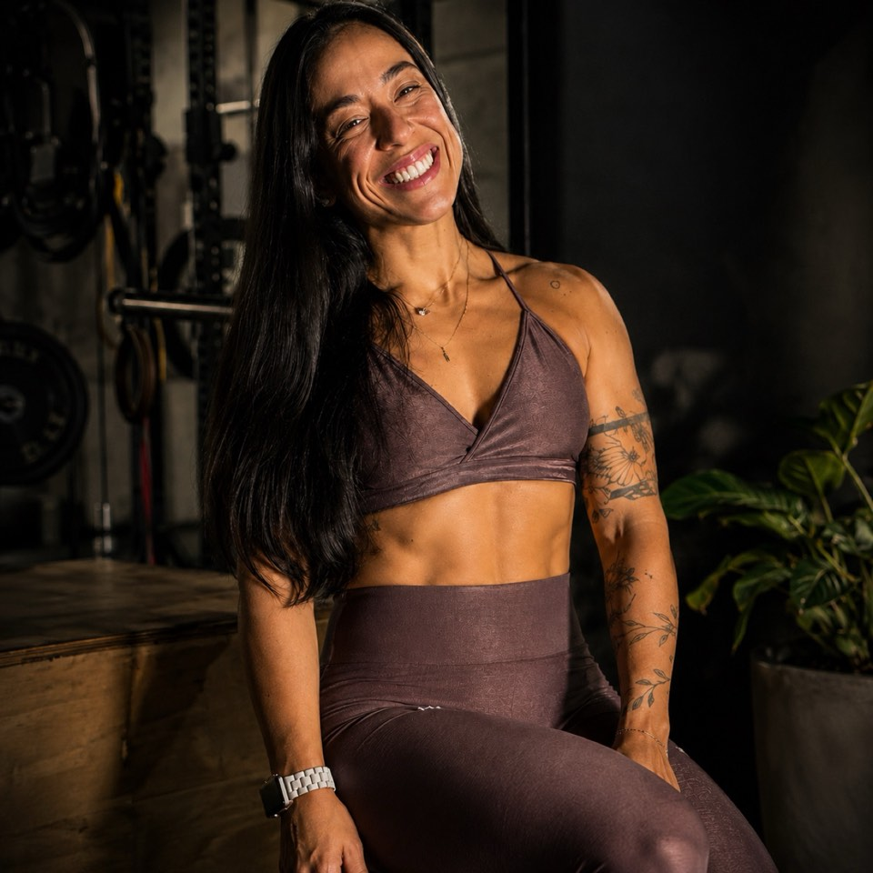
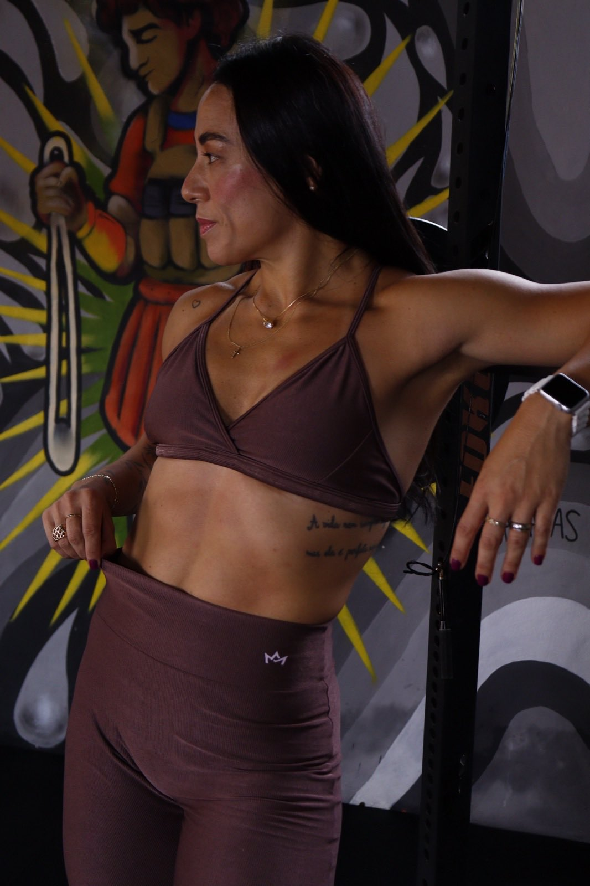
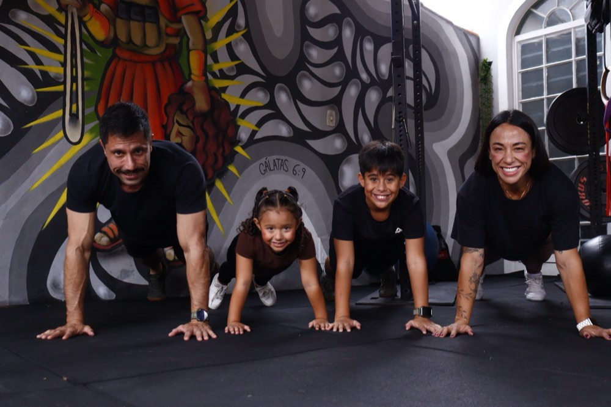

Leave a sedentary life
Gradually, without skipping steps.
MOVA-SE Program · 30 days
If you've started and stopped more than once, this program was made for you. In 30 days: workouts of about 25 minutes, at your own pace, with Personal Trainer Juliana Ueda.
No perfection and no rush. You start from where you are.

Maybe you spent so much time taking care of everyone else that, at some point, you left yourself for later.
Life got busy. The tiredness grew. Exercise kept getting pushed to tomorrow.
And that “I'll start on Monday” repeated itself so many times that you started to believe you can't be consistent.
I want to show you that you can.
You don't need to train for an hour a day, live on a diet, or change your whole life at once.
You just need to start.

Who will walk with you
Personal Trainer, woman, mom, wife, and Christian.
I believe in the power of movement, and not only to change a body. It gives a woman back her strength, energy, confidence, and independence.
I learned this by working with women: when a woman starts taking care of herself again, a lot of things around her start to change too.
To me, the body needs care, the mind needs direction, and the spirit needs to be strong.
My faith in God is part of who I am: I believe in purpose, discipline, fresh starts, and in the responsibility of caring for what we've been trusted with.
But here you won't find perfection. You'll find real life.
The program
Made for women who are sedentary, beginners, or have tried to start many times and couldn't keep a routine.
MOVA-SE wasn't created to turn you into an athlete. It was created to wake up the woman inside you who stayed in the background for too long.
Over 30 days, you'll build a new relationship with movement, through short, progressive workouts that fit into real life.
You start where you are. At your pace. With what you can do today. The first goal isn't to do everything. It's to keep going.
In 30 days, I want to help you:
Gradually, without skipping steps.
Workouts of about 25 minutes that fit your day.
Feel your body responding to movement.
Day after day, discover that you can do it.
Healthy eating can be simple and delicious.
Without living to train. Just setting aside a few minutes a day for yourself.
You start where you are. At your pace.
But how does this become a routine, in practice? Here's what the 30 days look like.
The journey
You don't need to spend hours training. In MOVA-SE, each workout lasts about 25 minutes and follows your progress.
The first step out of inertia.
Your body gets used to moving again.
More energy for your day.
You see what you're capable of.
Body, mind, and spirit moving together.
Each stage has a purpose. It's not just a sequence of exercises: it's a path out of inertia that shows you, day after day:
“I can do this.”
Starting with 25 minutes is already starting.
Family and purpose
I'm a woman, mom, wife, Personal Trainer, and Christian. Living all these roles, I understood: taking care of myself is also a way of taking care of the people I love.
Choosing yourself isn't selfish. It's caring for your body, mind, and spirit so you can live with more health, energy, and presence alongside the people who matter.
MOVA-SE was born from that purpose: helping women find space for themselves in the middle of real life.

Real food
If you found me through one of my recipes, you already know: I don't believe that taking care of what you eat means never enjoying food again.
I love reworking recipes and showing that eating in a more balanced way can also be practical, tasty, and doable for people with busy lives.
Health has to fit into your life, and not make you give up on it.
Records from Juliana's students
When a woman starts taking care of herself again, a lot of things around her start to change too. See what the women who started have to say.
Each story starts from a different point. Results vary from person to person.
Messages students sent to Juliana, with names partly hidden. Tap or click to enlarge and read.
Each story starts from a different point. Yours can start now.
Common questions
A 30-day program with doable workouts, practical recipes, guidance, and motivation, in five stages: Awakening, Movement, Energy, Confidence, and Balance. The goal is to build consistency without having to live to train.
Yes. MOVA-SE was created for women who are sedentary, beginners, or have tried to start many times and couldn't keep a routine. You start where you are, at your pace, with what you can do today.
The workouts are designed to last about 25 minutes and follow your progress. You don't need to train for an hour a day.
The focus here isn't dieting. The conversation is about eating without the fear: practical recipes and the idea that eating well can be simple and delicious. Health has to fit into your life.
No. It's a habit and movement program: the focus is leaving a sedentary life and building consistency. Results vary from person to person.
MOVA-SE does not replace medical or nutritional care. If you have pain, an injury, or a health condition, talk to your doctor before you start.
Maybe not even another weight-loss promise. Maybe you simply need to choose yourself again.
Start with 25 minutes. Put on comfortable clothes. And give your body the chance to find out what it's still capable of.
I can walk with you through these first 30 days.
Awake? MOVA-SE.